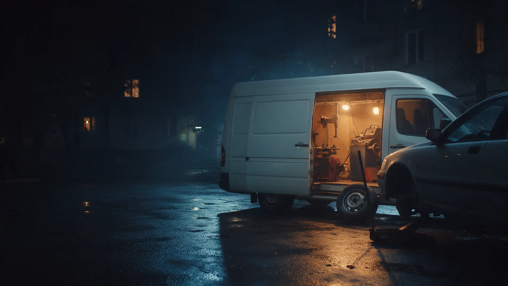
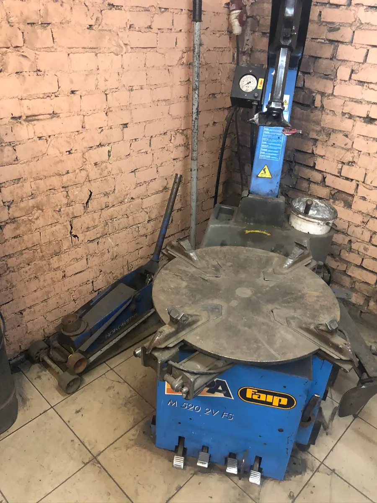
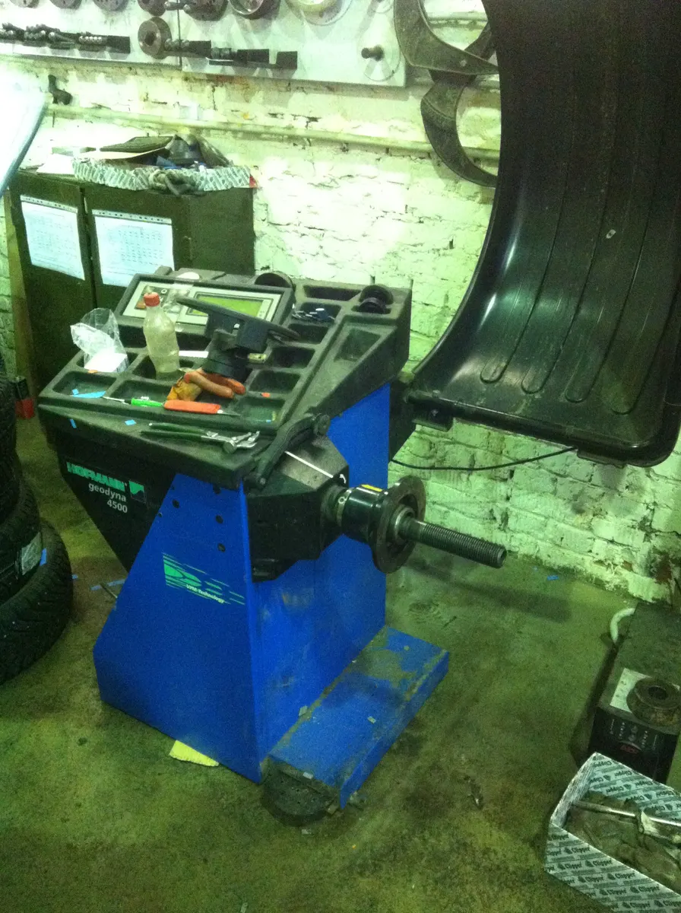
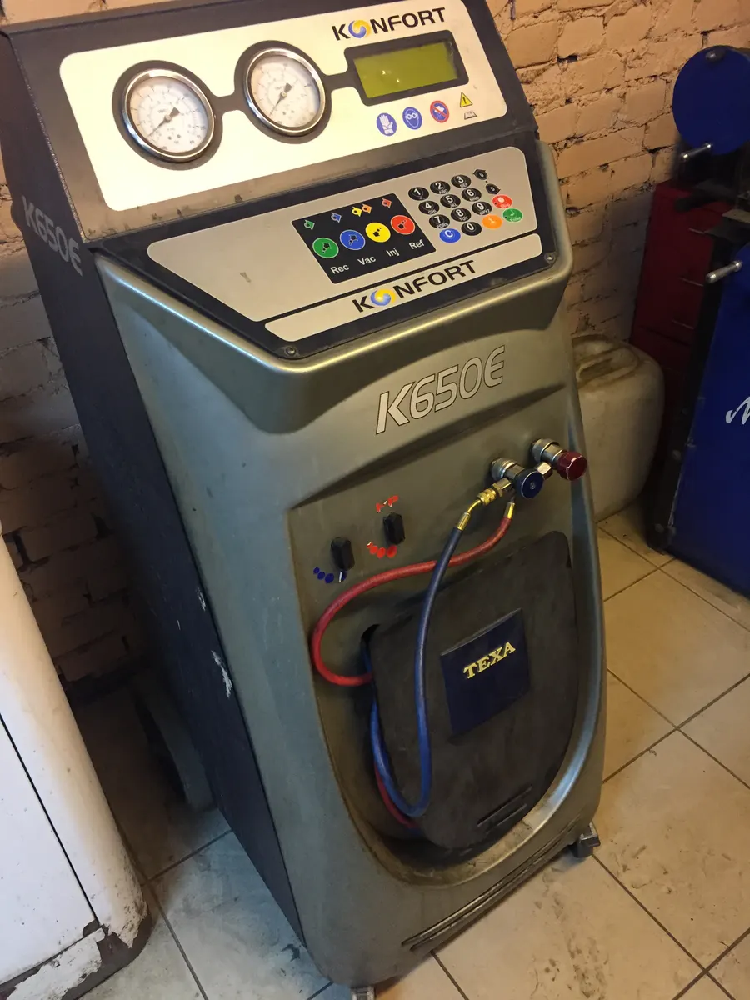

Фургон со станками
Выездной шиномонтаж в Москве – приедем к вашей машине
Переобувка, балансировка, ремонт проколов и боковых порезов на месте – у дома, у офиса или на дороге.
- Работаем круглосуточно
- Бокс на Большой Ордынке, 68 – въезд со двора
- Оплата картой или наличными

Цены
Сумма зависит от радиуса колёс и адреса – спросите её в WhatsApp до выезда.
С выездом
- Мобильный шиномонтажвыезд на дом или на дорогу2 500 ₽
- Сезонная переобувка комплектапо радиусу колёсуточнить
- Ремонт прокола или бокового порезауточнить
Другие услуги
- Заправка кондиционера500 г, на все авто2 000 ₽
- Грузовой шиномонтажуточнить
- Правка и прокатка дисковуточнить
- Аргонная сваркауточнить
- Хранение шинуточнить
Как вызвать
- 01
Пишете в WhatsApp
Выбираете услугу, день и время в форме вверху страницы и дописываете адрес, где стоит машина.
- 02
Уточняем детали
Радиус колёс, что нужно сделать и во сколько это обойдётся.
- 03
Фургон приезжает к машине
Внутри шиномонтажный и балансировочный станки, работаем прямо на месте.
- 04
Оплачиваете на месте
Картой или наличными.



С чем к нам обращаются
Колесо спустило, а ехать не на чем
Мастер приезжает к машине и чинит прокол или боковой порез на месте.
Сезонная переобувка без поездки в мастерскую
Меняем шины у дома или у офиса.
Негде держать второй комплект
Берём шины на хранение, в сезон ставим их обратно.
Диски и кондиционер
Правим и прокатываем диски, варим аргоном, заправляем кондиционер.
Отзывы с Яндекс.Карт
«На протяжении года пользуюсь услугами этого выездного шиномонтажа, приезжают на вызов быстро, и ремонт делают на совесть.»
Николай Каштанов · 24 декабря 2020
«Сильно выручили, когда надо было ехать, а колесо спустило. С собой ничего не было, вызвала ребят, приехали, проверили, оказалось проколола. На месте подлатали. Ценник нормальный как мне кажется.»
Юлия Ш. · 11 декабря 2018
«Оставлял на хранение зимнюю резину у ребят в этом году, в сезон приехал переобулся, оставил теперь летнюю. Расценками и качеством хранения доволен.»
Андрей Харченко · 9 января 2021
Отзывы с карточки на Яндекс.Картах, без правок.
Частые вопросы
Где находится бокс на Ордынке?
Большая Ордынка, 68, метро Добрынинская. Бокс в гаражах во дворе дома, въезд со двора. Чтобы заехать, нужен пропуск: перед приездом напишите или позвоните – объясним, как его получить.
Куда выезжаете?
Работаем в Москве. Назовите адрес в сообщении – ответим, когда сможем приехать.
Можно вызвать ночью?
Да, работаем круглосуточно. В форме время с 8 до 22 часов – для ночного вызова напишите в WhatsApp или позвоните.
Что фургон делает на месте?
В фургоне шиномонтажный и балансировочный станки. Переобуваем, балансируем, чиним проколы и боковые порезы там, где стоит машина.
Можно оставить шины на хранение?
Да, берём шины на хранение. Условия и цену уточните в WhatsApp.
Работаете с грузовыми?
Да, грузовой шиномонтаж есть. Размер колёс и адрес напишите в сообщении.
Напишите, куда приехать
- Адрес
- Большая Ордынка, 68, бокс во дворе, Москва
- Часы
- Круглосуточно
- Телефон
- +7 (495) 641-64-21